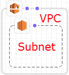
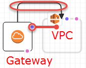

Terjemahan disediakan oleh mesin penerjemah. Jika konten terjemahan yang diberikan bertentangan dengan versi bahasa Inggris aslinya, utamakan versi bahasa Inggris.
Panel kanvas
Desainer menampilkan sumber daya template Anda sebagai diagram di panel kanvas. Anda dapat mengubah tata letak diagram, menambahkan atau menghapus sumber daya, dan menambahkan atau menghapus koneksi antara sumber daya dalam panel ini. Misalnya, Anda dapat menambahkan grup Auto Scaling dan konfigurasi peluncuran dari panel Jenis sumber daya ke panel kanvas. Untuk menghubungkan sumber daya terkait ini, seret koneksi di antara mereka.
Bagaimana sumber daya model Desainer?
Saat Anda menyeret sumber daya dari panel Jenis sumber daya ke panel kanvas, Designer memodelkannya sebagai wadah atau sebagai objek persegi.
- Kontainer
-
Sumber daya kontainer adalah persegi panjang yang dapat diubah ukurannya yang dapat berisi sumber daya lain. Misalnya, Designer memodelkan tipe
AWS::EC2::VPCsumber daya sebagai wadah. Anda dapat menyeret sumber daya, seperti subnet, ke VPC.Sumber daya kontainer

- Objek persegi
-
Sumber daya objek persegi tidak dapat diubah ukurannya atau berisi sumber daya lainnya. Misalnya, Designer memodelkan tipe
AWS::EC2::Instancesumber daya sebagai objek persegi.Objek persegi

Menghubungkan sumber daya
Anda menghubungkan sumber daya untuk membuat asosiasi antara sumber daya terkait. Sebagai contoh, ketika Anda menambahkan gateway Internet dan VPC ke panel kanvas, mereka tidak memiliki hubungan. Untuk melampirkan gateway ke VPC, Anda harus menghubungkannya. Metode untuk menghubungkan sumber daya tergantung pada jenis sumber daya dan bagaimana Desainer memodelkan sumber daya. Deskripsi dan gambar berikut menjelaskan setiap metode.
- Menambahkan sumber daya ke kontainer
-
Saat Anda menyeret sumber daya yang valid ke dalam kontainer, Designer secara otomatis membuat asosiasi antara sumber daya dan wadah. Misalnya, VPC adalah sumber daya kontainer; Anda dapat menyeret subnet ke VPC, dan Designer secara otomatis mengaitkan dua sumber daya tersebut.
Asosiasi ini direpresentasikan dalam templat anda sebagai fungsi intrinsik
Ref, seperti yang ditunjukkan dalam contoh berikut:JSON
"PublicSubnet": { "Type": "AWS::EC2::Subnet", "Properties": { "VpcId": { "Ref": "VPC" }, "CidrBlock": "10.0.0.0/24" }YAML
PublicSubnet: Type: 'AWS::EC2::Subnet' Properties: VpcId: !Ref VPC CidrBlock: 10.0.0.0/24Dalam beberapa kasus, menjatuhkan sumber daya ke dalam wadah tidak akan membuat asosiasi; Anda harus menyeret koneksi antara sumber daya (lihat metode selanjutnya untuk informasi tentang menyeret koneksi antara sumber daya). Untuk melihat apakah Designer mengaitkan sumber daya, gunakan editor JSON dan YAMAL terintegrasi untuk mencari sumber daya
Refdari satu sumber ke sumber lainnya. Misalnya, saat Anda menambahkan grup Auto Scaling dalam kontainer subnet, Designer tidak menentukan properti grupVPCZoneIdentifier(subnet). Untuk mengaitkan dua sumber daya, Anda harus menyeret koneksi dari grup Auto Scaling ke subnet. - Menyeret koneksi antara sumber daya
-
Tepi setiap persegi dan kontainer sumber daya memiliki satu atau lebih titik, yang mewakili sumber daya yang dapat Anda gunakan untuk membuat koneksi. Untuk membuat koneksi, seret garis penyambung dari titik ke jenis sumber daya yang terkait. Misalnya, untuk melampirkan gateaway Internet ke VPC, seret garis dari titik lampiran gateaway VPC ke mana saja di VPC.
Asosiasi ini direpresentasikan dalam template Anda sebagai fungsi intrinsik
Refatau sebagai jenis sumber daya yang terpisah. Misalnya, saat Anda menghubungkan gateway Internet dengan VPC, Designer membuat jenisAWS::EC2::VPCGatewayAttachmentsumber daya di template Anda untuk mengaitkannya. Sumber daya seperti ini tidak tercantum di panel Jenis sumber daya.JSON
"VPCGatewayAttachment": { "Type": "AWS::EC2::VPCGatewayAttachment", "Properties": { "InternetGatewayId": { "Ref": "InternetGateway" }, "VpcId": { "Ref": "VPC" } }YAML
VPCGatewayAttachment: Type: 'AWS::EC2::VPCGatewayAttachment' Properties: InternetGatewayId: !Ref InternetGateway VpcId: !Ref VPC - Mengodekan koneksi antara sumber daya
-
Dalam beberapa kasus, Anda harus mengedit JSON atau YAML templat untuk membuat koneksi, seperti ketika Anda menghubungkan dua grup keamanan. Ketika Anda harus mengedit JSON atau YAML untuk membuat koneksi, Anda membuat koneksi hard-code (koneksi garis putus-putus). Anda tidak dapat membuat atau mengedit koneksi ini di panel kanvas.

Biasanya, ketika Anda menanamkan referensi (
Ref) dalam properti sumber daya, Anda membuat koneksi hard-code. Misalnya, Anda dapat menentukan koneksi antara dua grup keamanan di mana satu grup keamanan memiliki aturan masuk tertanam yang mengizinkan lalu lintas dari yang lain. Sumber dayaWebServerSecurityGroupberikut memiliki aturan masuk dengan referensi ke sumber dayaPublicLoadBalancerSecurityGroup.JSON
"WebServerSecurityGroup": { "Type": "AWS::EC2::SecurityGroup", "Properties": { "VpcId": { "Ref": "VPC" }, "GroupDescription": "Allow access from HTTP and SSH traffic", "SecurityGroupIngress": [ { "IpProtocol": "tcp", "FromPort": 80, "ToPort": 80, "CidrIp": "0.0.0.0/0" }, { "IpProtocol": "tcp", "FromPort": 22, "ToPort": 22, "CidrIp": { "Ref": "SSHLocation" } } ] } ...YAML
WebServerSecurityGroup: Type: 'AWS::EC2::SecurityGroup' Properties: VpcId: !Ref VPC GroupDescription: Allow access from HTTP and SSH traffic SecurityGroupIngress: - IpProtocol: tcp FromPort: 80 ToPort: 80 CidrIp: 0.0.0.0/0 - IpProtocol: tcp FromPort: 22 ToPort: 22 CidrIp: !Ref SSHLocation
Mengakses tindakan sumber daya umum dengan menu sumber daya
Menu Resource menyediakan akses mudah ke tindakan sumber daya umum: mengedit properti sumber daya, menduplikasi sumber daya, menghapus sumber daya, atau melihat dokumentasi untuk sumber daya. Untuk melihat menu Sumber Daya, klik kanan pada sumber daya di panel kanvas. Tautan dokumentasi mengarah ke referensi templat, yang menjelaskan properti dan sintaks untuk sumber daya tersebut.
Menu sumber daya
Mendefinisikan dependensi eksplisit
Untuk menentukan urutan AWS CloudFormation membuat dan menghapus sumber daya, Anda dapat membuat dependensi eksplisit. Dependensi eksplisit berguna untuk mengesampingkan pembuatan dan penghapusan sumber daya paralel. AWS CloudFormationsecara otomatis menentukan sumber daya mana dalam template yang dapat diproses secara paralel dan mana yang tidak. Saat Anda menentukan properti yang mereferensikan atribut dari sumber lain (menggunakan fungsi intrinsik Ref) atau mendapatkan atribut dari sumber lain (dengan fungsi intrinsik Fn::GetAtt) dalam templat yang sama, ini menyiratkan dependensi dan AWS CloudFormation membangunnya dalam urutan yang benar.
Namun, dalam beberapa kasus, Anda harus secara eksplisit mendefinisikan dependensi. Misalnya, aturan perutean tidak dapat menggunakan gateway Internet sampai gateway dilampirkan ke VPC. Biasanya, AWS CloudFormation menciptakan aturan perutean segera setelah membuat gateway Internet karena dependensi implisit. Tapi, AWS CloudFormation mungkin membuat aturan sebelum gateway Internet terpasang ke VPC, yang menyebabkan kesalahan. Oleh karena itu, Anda harus secara eksplisit menentukan ketergantungan pada lampiran gateway-VPC.
Untuk membuat ketergantungan eksplisit, seret garis dari titik DependsOn (*) di rute ke lampiran gateway-VPC.
Untuk informasi selengkapnya tentang kapan Anda mungkin perlu membuat dependensi eksplisit, lihat DependsOnatribut.
JSON
Di JSON, dependensi eksplisit ini direpresentasikan sebagai atribut DependsOn di sumber daya, seperti yang ditunjukkan pada contoh berikut:
"PublicRoute": { "Type": "AWS::EC2::Route", "DependsOn": "VPCGatewayAttachment", "Properties": { "DestinationCidrBlock": "0.0.0.0/0", "RouteTableId": { "Ref": "PublicRouteTable" }, "GatewayId": { "Ref": "InternetGateway" } }
YAML
Di YAML, dependensi eksplisit ini direpresentasikan sebagai atribut DependsOn di sumber daya, seperti yang ditunjukkan dalam contoh berikut:
PublicRoute: Type: 'AWS::EC2::Route' DependsOn: - VPCGatewayAttachment Properties: DestinationCidrBlock: 0.0.0.0/0 RouteTableId: !Ref PublicRouteTable GatewayId: !Ref InternetGateway